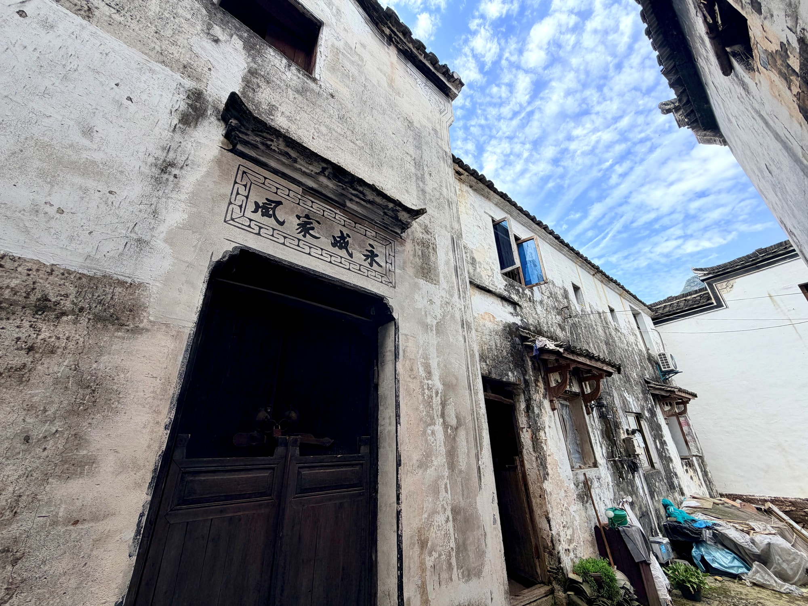
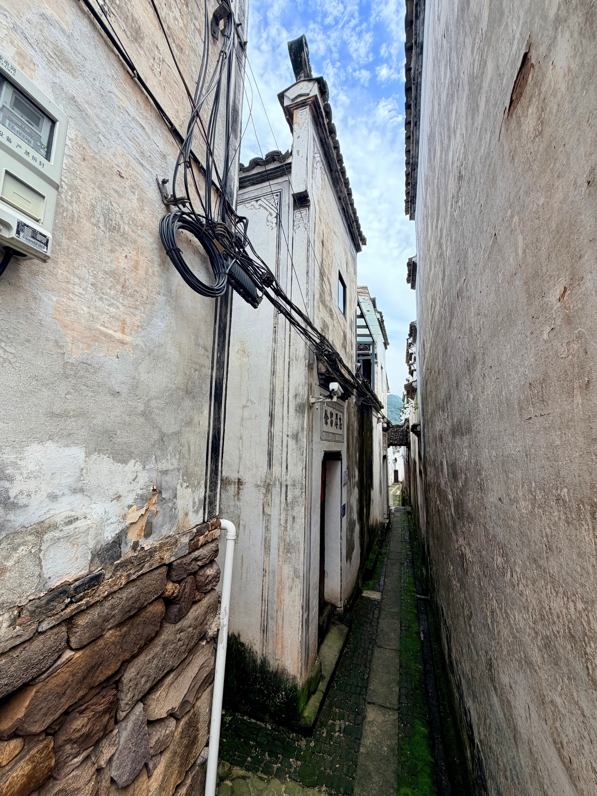
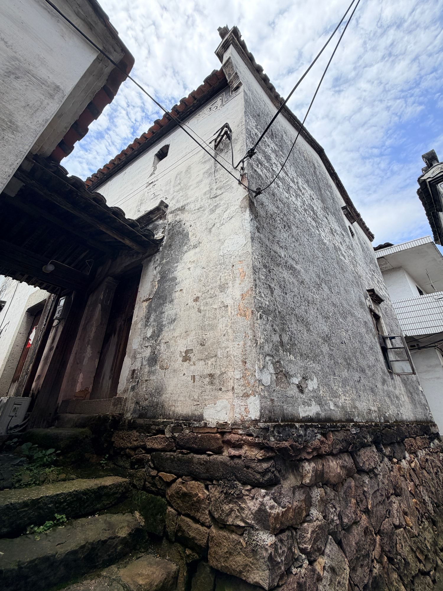

省保传统民居
侧巷、院落与入口之间叶瑞荣、叶毅峰民居
叶瑞荣、叶毅峰民居是省级文物保护单位“新叶村乡土建筑”的组成部分。侧巷、院落与入口相互连接，呈现出住宅由外及内的空间层次。
01
侧巷形成的建筑边界

侧面巷道把住宅外墙与周围通行空间放在同一视野里。这里呈现的是建筑如何进入古村连续的街巷界面。
02
院落与入口的转换

院落把视线带入住宅内部，入口则标记内外空间的转换。由门前到院中，尺度逐渐收拢，也让老宅显出更安静的生活气息。

叶瑞荣、叶毅峰民居是省级文物保护单位“新叶村乡土建筑”的组成部分。侧巷、院落与入口相互连接，呈现出住宅由外及内的空间层次。

侧面巷道把住宅外墙与周围通行空间放在同一视野里。这里呈现的是建筑如何进入古村连续的街巷界面。

院落把视线带入住宅内部，入口则标记内外空间的转换。由门前到院中，尺度逐渐收拢，也让老宅显出更安静的生活气息。